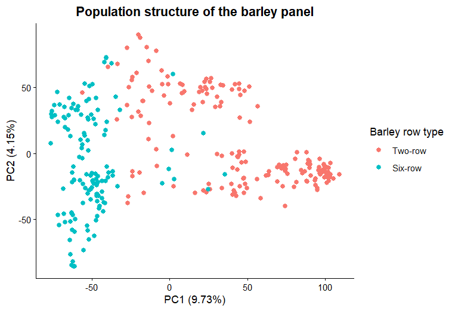

Principal component analysis (PCA) transforms correlated marker genotypes into orthogonal axes that summarize major patterns of genetic variation. In this project, each point represents a barley genotype; point colour represents its row type.
The workflow uses the filtered genotype matrix gt_qc produced by the shared VCF quality-control step. Its rows must be SNPs and its columns must be genotypes. Sample identifiers must match the phenotype table exactly before plotting.
Run the common genotype QC and sample-synchronization script first. This page does not recreate gt_qc independently.
Analysis workflow
From SNP matrix to interpretable ordination
R code
Principal components and publication-style scatter plot
library(ggplot2)
library(dplyr)
# gt_qc: SNPs in rows, genotypes in columns
stopifnot(!is.null(colnames(gt_qc)))
stopifnot(all(c("Taxa", "RowType") %in% names(pheno)))
# PCA expects individuals in rows and markers in columns
geno_pca <- t(gt_qc)
# Remove invariant markers to avoid zero-variance scaling
marker_sd <- apply(geno_pca, 2, sd, na.rm = TRUE)
geno_pca <- geno_pca[, is.finite(marker_sd) & marker_sd > 0, drop = FALSE]
# Impute remaining missing genotypes with each marker's mean
for (j in seq_len(ncol(geno_pca))) {
miss <- is.na(geno_pca[, j])
if (any(miss)) geno_pca[miss, j] <- mean(geno_pca[, j], na.rm = TRUE)
}
pca <- prcomp(geno_pca, center = TRUE, scale. = TRUE)
PC <- data.frame(
Taxa = rownames(pca$x),
PC1 = pca$x[, 1],
PC2 = pca$x[, 2]
)
pca_var <- summary(pca)$importance[2, ]
PC1_var <- round(100 * pca_var["PC1"], 2)
PC2_var <- round(100 * pca_var["PC2"], 2)
# Make sure Taxa IDs use the same format in both tables
pheno_pca <- pheno %>%
mutate(Taxa = as.character(Taxa),
RowType = factor(RowType, levels = c(2, 6),
labels = c("Two-row", "Six-row")))
PC <- PC %>%
mutate(Taxa = as.character(Taxa)) %>%
inner_join(pheno_pca %>% select(Taxa, RowType), by = "Taxa")
ggplot(PC, aes(PC1, PC2, colour = RowType)) +
geom_point(size = 2.6, alpha = 0.85) +
scale_colour_manual(values = c("Two-row" = "#2d5c42",
"Six-row" = "#c8a84b")) +
labs(title = "Population structure of the AM2017 barley panel",
x = paste0("PC1 (", PC1_var, "%)"),
y = paste0("PC2 (", PC2_var, "%)"),
colour = "Barley row type") +
theme_classic(base_size = 13) +
theme(plot.title = element_text(hjust = 0.5, face = "bold"),
axis.title = element_text(face = "bold"))PCA results
Genetic differentiation by barley row type

Interpretation
What the PCA can and cannot establish
- PC1 and PC2 labels show the percentage of marker variation explained by each axis.
- Separation by row type suggests that row type is associated with genome-wide genetic structure in this panel.
- Overlap does not prove that population structure is absent; inspect additional PCs and other metadata.
- PCA is exploratory. Whether PCs should be included as GWAS covariates should be decided with model diagnostics and the structure-control strategy. The published AM2017 article reports different explained-variance percentages, so label this figure as the output of this project's workflow unless the article's original analysis is reproduced.
Reproducibility notes
Confirm that genotype sample names and pheno$Taxa match exactly. Scaling PCA variables can give rare or low-variance markers substantial influence; consider a centred-only PCA or a genetics-appropriate PCA method as a sensitivity analysis. Report the method actually used.